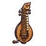
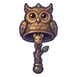
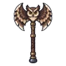
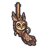
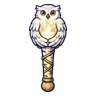
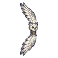

ลูกนกฮูกจ่าฝูง
มอนธาตุลม Lv 51–56
เจอที่
| แมพ | โซน | Lv | ภูมิภาค |
|---|---|---|---|
| หอดูดาวนกฮูก ชั้น 1 | 51–54 | ดินแดนเหนือ | |
| หอดูดาวนกฮูก ชั้น 2 | 54–56 | ดินแดนเหนือ |
ค่าสถานะตามเลเวล
| Lv | HP | ATK | DEF | MDEF | EXP | Job |
|---|---|---|---|---|---|---|
| 51 | 17,753 | 113–170 | 22 | 9 | 90 | 68 |
| 53 | 19,660 | 118–177 | 23 | 10 | 94 | 71 |
| 56 | 22,646 | 124–186 | 25 | 10 | 98 | 74 |
ตีด้วยธาตุไหนดี
แรงขึ้น: ดิน ×1.5 พิษ ×1.25
เบาลง: น้ำ ×0.5 ลม ×0.25
วัตถุดิบที่ดรอป
| ของ | โอกาส | |
|---|---|---|
| หมวกลูกโอ๊กจิ๋ว | 55% | 1 ชิ้น (15% ได้ 2) |
อุปกรณ์ที่ดรอป (10)
| ของ | โอกาส |
|---|---|
 เครื่องดนตรีหีบหมุนช่างหลวง | 0.25% |
| เกราะนกฮูกราตรี (เกราะอก) | 0.15% |
| เกราะนกฮูกราตรี (สนับขา + รองเท้าเกราะ) | 0.15% |
 กระดิ่งวิญญาณนกฮูก | 0.12% |
 ขวานยักษ์ปีกนกฮูก | 0.12% |
 ปืนพกคู่นกฮูก | 0.12% |
 คบเพลิงนกฮูกขาว | 0.12% |
| 0.08% | |
 ธนูปีกนกฮูก | 0.06% |
| เกราะนกฮูกราตรี (จี้ขนนกฮูก) | 0.05% |
สกิล
หลบ (Lv 25+) · หลบ (Lv 60+) · ยิงกระจาย (Lv 60+)